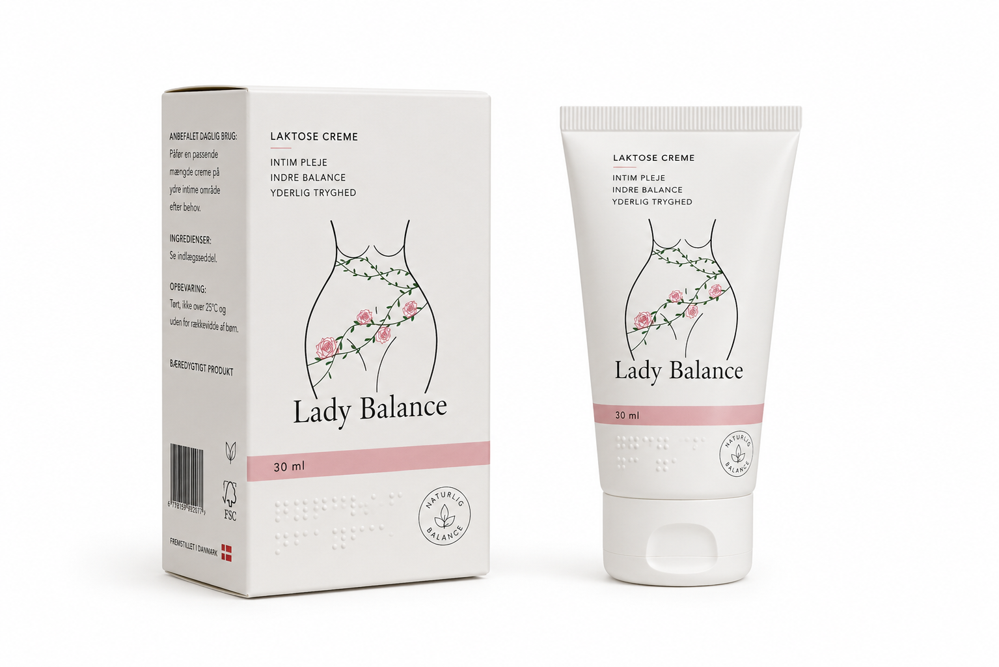
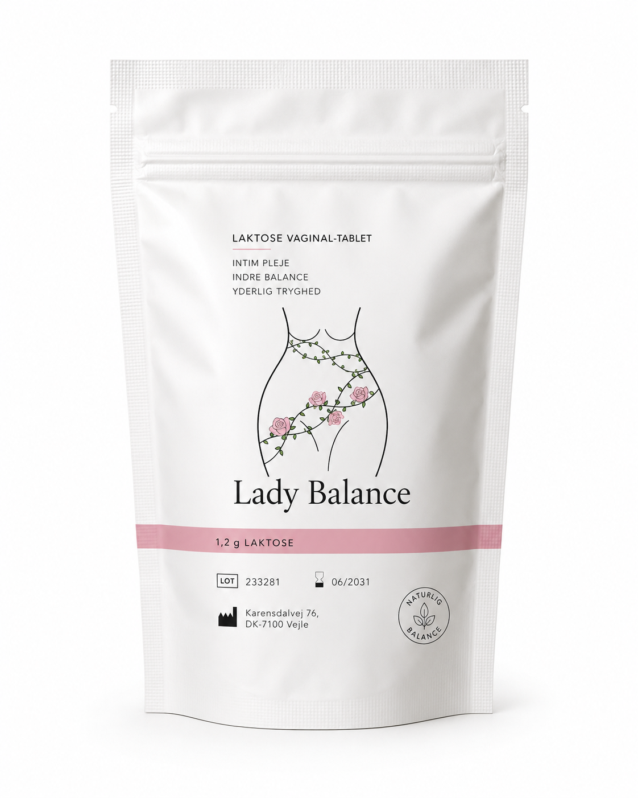

Din Daglige Balance Starter Her
Pleje, Komfort og selvtillid Se produkterneHvorfor Vælger Kvinder Lady Balance
Holder intimområdet frisk og i naturlig balance
Støtter kroppens egne mælkesyrebakterier
Virker på under ét døgn
Nemme at bruge
Udviklet af dansk forsker
Kan købes på apoteket
Indeholder Laktose
Parfume og parabenefri
Populære Varer
Skabt til at virke
4.8 - 126 reviews Intimcreme - med laktose
Læs mere om produktet
100.00 kr

4.8 - 126 reviews Intimtabletter normal 30 stk.
Læs mere om produktet
135.00 kr

Tusind årsager til dårlig lugt fra underlivet
Dårlig lugt fra skeden eller lugt i underlivet er en af de hyppigste grunde til, at kvinder søger information og finder frem til LadyBalance. Mange oplever fiskeagtig eller ammoniak lugt fra skeden, andre beskriver det som lugtende underliv eller salmiak-lugt fra skeden. Læs mere
22-10-2026 1200 visning
De gode bakterier i skeden danner antibiotiske stoffer
Bakterier i skedens mikroflora har genetisk potentiale til at danne en hidtil ukendt type antibiotika Læs mere
22-10-2026 1200 visning
Ny dansk undersøgelse af celleforandringer i livmoderhalsen
Undersøgelsen viser, at mange kvinder med CIN2 får det bedre uden kirurgisk indgreb, når kroppen selv får lov at arbejde. Læs mere
22-10-2026 1200 visning